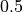
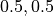

パーカー不安定¶
- 著者
工藤祐己（千葉大学）、工藤哲洋（国立天文台）
背景¶
磁場に貫かれた電離ガスが重力によって成層化している場合、擾乱を与えると系は線形不安定である。この不安定性は、曲げられた磁力線に沿ってガスが落下することで発生した浮力が磁気張力に打ち勝つ場合に成長する、磁気浮力不安定性の一種である。 Parker(1966, 1967) は、銀河においてこの不安定性によって低温で高密度な星間ガス雲が形成されるというモデルの提唱と不安定性の安定性解析をしたことからパーカー不安定性と呼ばれている。パーカー不安定性は、銀河・降着円盤のような円盤天体や太陽大気に代表されるような恒星大気において、天体内部の磁場強度に制限を与える増幅・維持機構(ダイナモ機構)や磁束浮上によるエネルギー輸送とコロナ加熱といった磁気的活動性に重要な物理機構であると考えられている。
本課題では回転によるシアやコリオリ力を無視した、円盤の一部を切り取った局所2次元計算を行う（z方向のセル数を1として計算する）。
課題設定¶
無次元化¶
計算コードの中において、変数は次の表１のように無次元化して扱われている。長さ、速度、時間の単位はそれぞれ 、 、 。ここで、 はそれぞれスケールハイトと音速を表す。表１に各物理量とその規格化単位をまとめる（ はボルツマン定数、  は平均粒子質量を表す）。
は平均粒子質量を表す）。
変数
規格化単位


以降、変数は無次元量として記述する。
パラメータ・初期条件・境界条件¶
初期条件として、ガスは次のような重力・温度・プラズマベータの分布のもとで密度・圧力分布を決める。重力分布は赤道面(  )に対して反対称となるよう与える。
)に対して反対称となるよう与える。
温度分布は、円盤部(低温ガス)とコロナ(高温ガス)からなる。それぞれ に低温ガス( )、 に高温ガス( )となるように与える。
プラズマベータは であるような磁気シートが に分布するように与える。
これらの条件のもと、 での密度の値  を決めることで密度・圧力分布は次の式を解く。
を決めることで密度・圧力分布は次の式を解く。
![\frac{d}{dy} [(1+\alpha) p ] &= \rho g_y \\
p &= \rho T / \gamma](_images/math/334d100ed0718e07e82abecc2599b46014c2a1ad.png)
初期磁場は  成分のみとし
成分のみとし
また、この初期状態に、赤道面( )に対して反対称となるような速度擾乱を加える。
パラメータについては"const.f90"の中で表のように設定されている。
パラメタ
値
コードの中の変数名
y=0の重力
g0
重力の変化の遷移幅

wg
低温・高温ガスの遷移する位置
ytr
遷移幅
wtr
高温ガス温度
tcor
円盤部のプラズマベータの逆数
alpha
磁気シートの範囲と遷移幅
yf1, yf2, wf0
比熱比
gm
ro0
擾乱の振幅
amp
擾乱の
方向の波長
xlamd, ylamd
擾乱の
方向の印加範囲
yptb1, yptb2, yptb3, yptb4
擾乱の

wptb1, wptb2
[xmin, xmax]
[ymin, ymax]
方向計算領域
[zmin, zmax]


境界条件は、 境界に周期境界、 境界に初期値を代入するような境界条件をおいた。
結果¶
計算結果を以下に示す。
パーカー不安定性の線形段階において線形解析とシミュレーションの結果を比較した。
{kind=link}
左は縦軸を 方向の波数、横軸を成長率にとった、線形解析によるパーカー不安定性の分散関係。右は線形段階による摂動  の線形成長と線形解析との比較。¶
の線形成長と線形解析との比較。¶
図左 は、線形理論によって課題設定のパラメータ(温度、重力、磁気シートに従う)を用いて計算された不安定性モードの分散関係である。成長率が最大となるのは 、 :臨界波数は と求まった。線形理論による計算手法は Matsumoto et al. (1988) に従った（線形理論の詳細については Parker 1966 ; Matsumoto et al. 1988 ; Kim et al. 1997 ）。パーカー不安定性の分散関係はパラメータ（温度、重力、磁気シートの空間分布等）に依存する（例えば、 Kim & Hong, 1998 , Kamaya et al. 1996 ）。
図右 はシミュレーションから得られた、初期の摂動振幅が最大となる位置における の時間発展(実線)と線形解析による成長率(破線)を示した。線形解析の結果、初期摂動の波長 に対して成長率は と求まり、シミュレーション結果とほぼ一致していることがわかる。
{kind=link}
非線形段階( )のシミュレーション結果。カラーコントアは左が圧力、右が密度を表し、曲線が磁力線、矢印は速度ベクトルを表す。¶
図 は非線形段階 における結果を示した。パーカー不安定性によって磁力線がループ状に曲げられている。ループの頂上では磁力線に沿ったガスの落下に伴って密度と圧力が減少し、磁力線に沿った落下速度が大きくなることで生じた衝撃波が見られる。一方ループの足元では、落下してガスが集まり増加している。様々なプラズマベータにおける非線形段階の振る舞いについては Matsumoto et al. (1990) で詳しく議論されている。